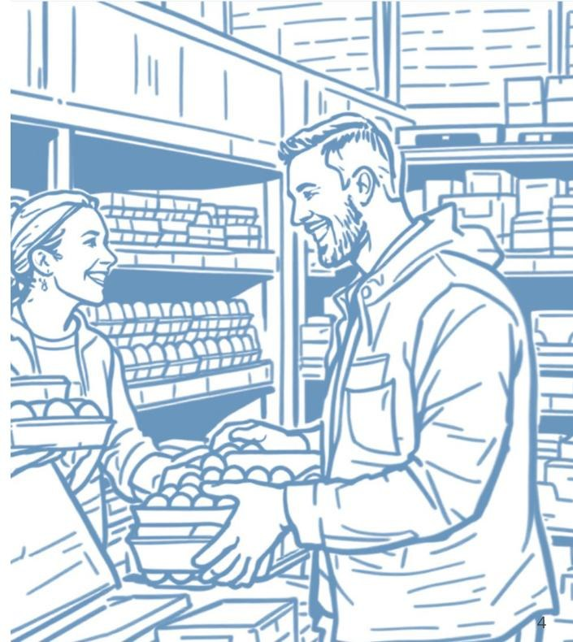
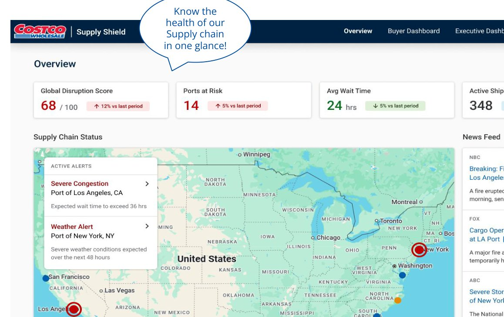
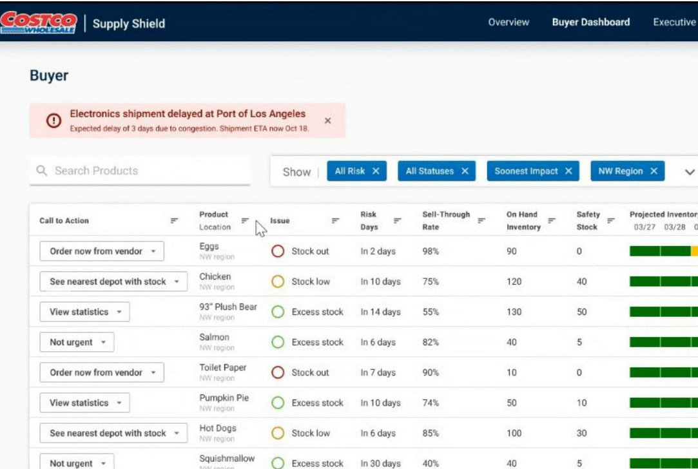
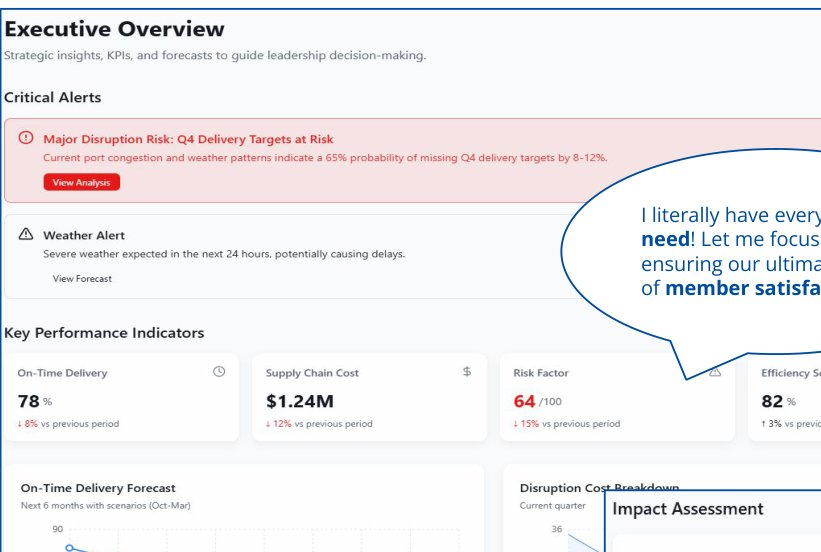
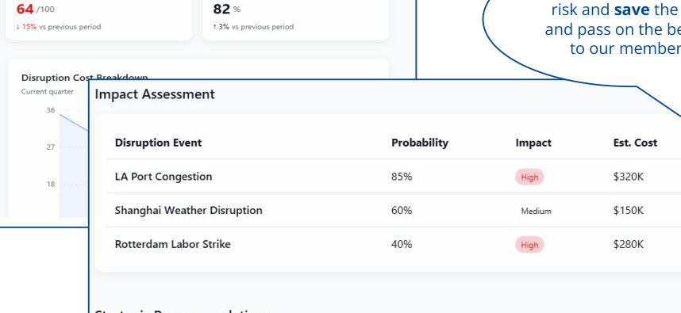

Turning chaos into command: one dashboard that lets Costco buyers see a disruption coming instead of finding out from an empty shelf.
THE PROBLEM

Costco buyers are the first line of defense when weather or port congestion threatens the supply chain, but they were working from supplier updates, gut feel, and data scattered across spreadsheets and reports. One buyer put it simply: "By the time I hear there's a delay, it's already too late to do anything about it." When wildfires hit Southern California, shipments backed up at the Port of LA, shelves at the LA warehouse thinned, and members left without items they wanted — a disruption the team only saw after it had already reached the floor.
THE SOLUTION
SupplyShield consolidates inventory, weather, and port congestion data into one proactive dashboard, so buyers and leadership can see risk coming and act before members feel it. I worked as the BI engineer on a 3-person cross-functional team, alongside a data engineer and a UX designer.

The Overview dashboard — one glance at the health of the whole supply chain.
WHAT A BUYER SEES
Instead of a generic report, each product shows a specific recommended action — order now, find the nearest depot with stock, or no action needed — next to a 7-day projected inventory bar that turns from green to red as risk builds.

The Buyer dashboard — filtered to what one buyer owns, with a clear next action per product.
WHAT LEADERSHIP SEES
Leadership needed a different altitude: not per-SKU detail, but which disruptions were likely, what they'd cost, and what to do about each one.


Executive KPIs on the left, a per-disruption cost and mitigation table on the right.
KEY DECISIONS
01
One tool, two altitudes
Buyers needed an action per SKU; leadership needed a portfolio view of risk and cost. Rather than build two disconnected tools, SupplyShield used one data model with two dashboards, so a disruption buyers were already handling was instantly visible to leadership in dollar terms, without a separate report.
02
Lead with the call to action, not the data
Early internal reviews showed buyers didn't want more charts — they wanted to know what to do. Every row in the buyer dashboard leads with a specific action (order now, find nearest depot, not urgent) rather than a raw risk score, so the dashboard is read in seconds, not interpreted.
03
Price the disruption, not just the delay
A congestion alert on its own doesn't tell leadership what to prioritize. The executive view attaches an estimated cost and probability to each disruption event, so mitigation effort goes to the highest expected-cost risk first, not just the most recent alert.
BUSINESS CASE
Over 80% of Costco's cargo moves through maritime containers, and U.S. ports rank among the least efficient of 370 global ports. A 1% delay in U.S. port trade ties up more than $10 billion in goods, and congestion of a week or more is common in peak season — so even a 2-day early warning gives a buyer real room to reroute or reprioritize before a disruption reaches the shelf.
WHAT'S NEXT
This was scoped and designed as a focused MVP — mockup-complete and ready to build. The roadmap beyond it: vendor-level risk scoring, extending past U.S. ports to global imports, predictive "what if" scenario planning, and integrating directly with existing inventory and sourcing platforms instead of standing alone.
See the full presentation (24 slides)
Every slide from the original deck I built this case study from, for anyone who wants the complete walkthrough — the empathy research, the before/after, the user journeys, and the rollout plan.